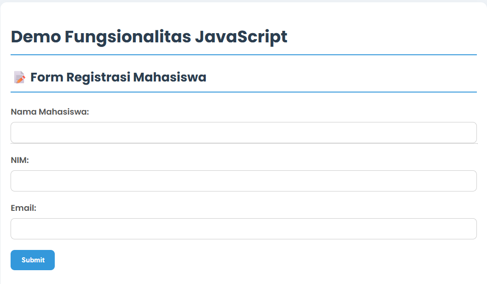
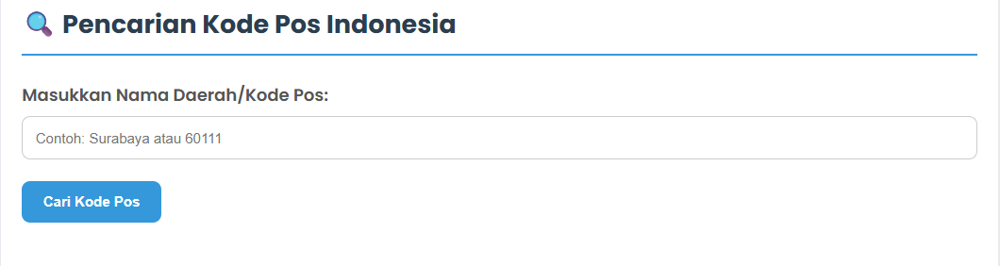
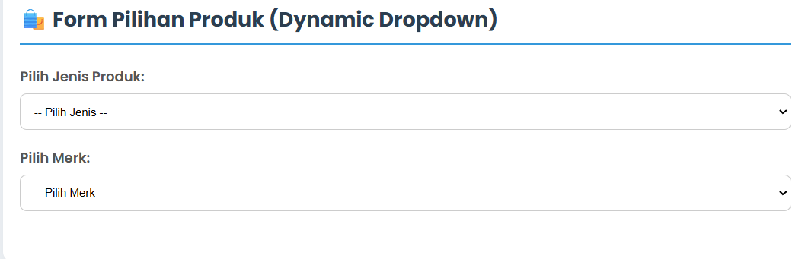

Halaman demo ini menggabungkan tiga fitur utama yang dibuat menggunakan JavaScript untuk menciptakan pengalaman pengguna yang dinamis dan interaktif. Berikut adalah rincian dari setiap fitur:
Fitur pertama adalah sebuah form registrasi sederhana. Untuk meningkatkan pengalaman pengguna, pada kolom input "Nama Mahasiswa" ditambahkan fungsionalitas autocomplete. Saat pengguna mulai mengetik, sebuah daftar saran nama akan muncul di bawah kolom input. Daftar nama ini disimpan dalam sebuah array JavaScript, sehingga tidak memerlukan database. Selain itu, ada validasi sederhana untuk memastikan semua kolom terisi sebelum form disubmit.
Contoh fitur autocomplete saat mengetik nama.
Fitur kedua adalah alat pencarian kode pos untuk wilayah di Indonesia. Fitur ini terhubung ke API publik (`kodepos.vercel.app`) untuk mengambil data secara real-time. Pengguna dapat mencari berdasarkan nama daerah (kota, kecamatan) atau langsung memasukkan kode pos. Hasil pencarian akan ditampilkan secara dinamis di bawah form tanpa perlu me-refresh halaman.
Hasil pencarian kode pos untuk "60111".
Fitur terakhir adalah dynamic dropdown list. Terdapat dua dropdown: "Pilih Jenis Produk" dan "Pilih Merk". Pilihan merek yang tersedia akan berubah secara otomatis tergantung pada jenis produk yang dipilih. Misalnya, jika pengguna memilih "Handphone", maka dropdown merek akan menampilkan pilihan seperti Samsung, Apple, dan Xiaomi. Data untuk fitur ini juga disimpan dalam objek JavaScript.
Pilihan merek berubah saat jenis produk "Televisi" dipilih.
Halaman demo di bawah ini adalah hasil akhir dari pengerjaan tugas ini, yang telah mencakup semua fungsionalitas yang disyaratkan dalam satu halaman.
Lihat Demo Live